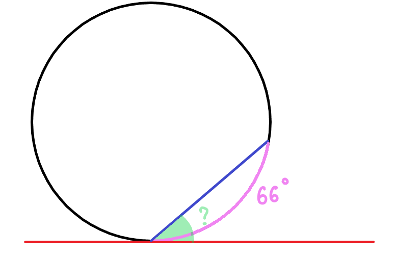

Основные элементы, свойства и теоремы
Окружность - это множество точек, равноудаленных от фиксированной точки (центра).
Круг - часть плоскости, ограниченная окружностью.
Рисунок 1 - элементы окружности
Рисунок 2 - длина окружности и площадь круга
Длина окружности:
Площадь круга:
Рисунок 3 - центральный (синий) и вписанный (красный) углы
Центральный угол равен градусной мере дуги, на которую он опирается.
Вписанный угол равен половине дуги, на которую он опирается.
Рисунок 4 - вписанные углы, опирающиеся на общую дугу
Рисунок 5 - свойства касательных
Свойства касательных:
Задача: Найти угол между касательной и хордой, если хорда стягивает дугу 64°
Рисунок 6 - условие задачи
1. Проведем радиусы OA и OB:
Центральный угол AOB = 64° (равен дуге).
2. Треугольник AOB - равнобедренный (OA = OB - радиусы):
3. Угол между касательной и радиусом 90°:
Рисунок 7 - решение задачи
Ответ: Угол равен 32°.
Рисунок 8 - свойства секущих
Рисунок 9 - свойство касательной и секущей
Рисунок 10 - окружность, вписанная в треугольник
Центр - точка пересечения биссектрис.
Для прямоугольного треугольника:
где k₁, k₂ - катеты, h - гипотенуза
Рисунок 11 - доказательство формулы
Рисунок 12 - окружность, описанная около треугольника
Центр - точка пересечения серединных перпендикуляров.